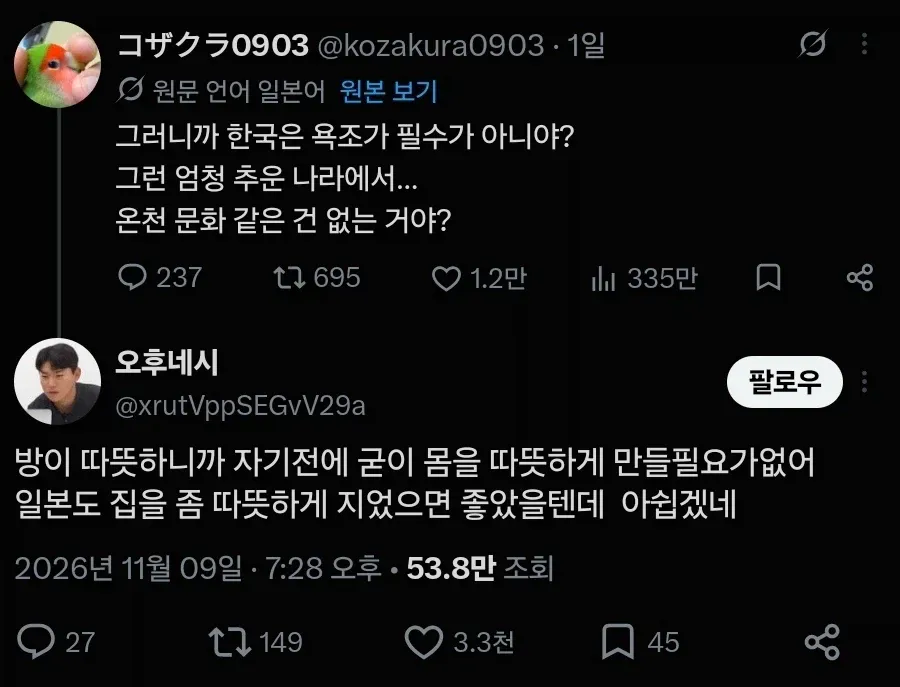
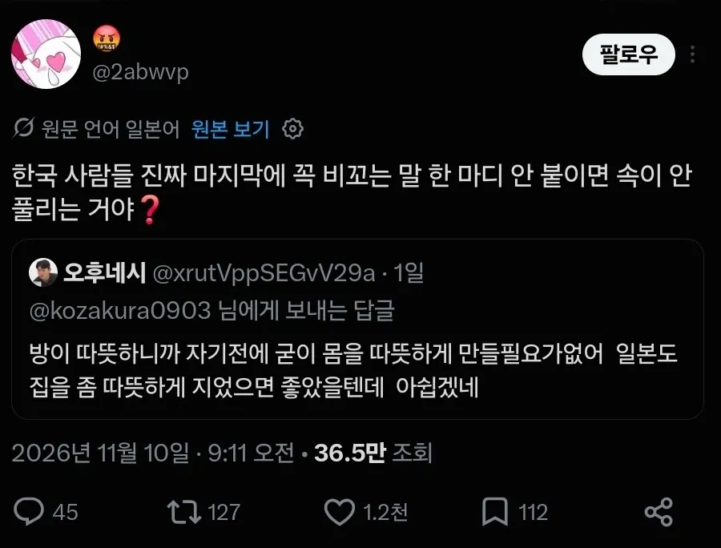

맨날 비꼬기만 하다가 당해보니까 어질어질하제?


맨날 비꼬기만 하다가 당해보니까 어질어질하제?
오사카 사람일수도 있지
전혀 정정당당한 오사카스러운말을 하지않음
속이 뻥
애초에 원글부터 꼬는듯 안꼬는듯 썼네
받아친애가 원글이랑 똑같이 쓴거라고 봄
마지막 한마디에 비꼬는 의도가 담긴거지 ㅋㅋ
온천문화 같은건 없는거야?랑
일본도 집을 좀 따뜻하게 지었으면 좋았을텐데 아쉽네랑 마찬가지라고 생각함
전자가 정말 온천문화가 없는건지 궁금해하는걸로 느껴진다면 후자도 일본 건축/시공에 대한 아쉬움을 말한거라고 받아들일수 있어야지
그런가 그닥 비꼬는 건 아닌 거 같은데
그게 핵심이야 비꼬지만 비꼬지않은듯
누군가에겐 비꼰것 마냥 들리고 누군가에겐 그냥 물어본거구나~ 아쉽구나~ 하게 들리는
저런 화법이 잦으면 잦같은거지
세상에 목욕문화가 없는 나라가 있다는 생각부터 개멍청이가 아닌이상 비꼬는건데 그걸 못알채는거야?
저 원글만 봤을 때엔 꼬는 듯 안 꼬는 듯 썼어서 비꼰거라고 확신할 수 없지만
저 사람의 화법 그대로 돌려줘 봤을 때에 발끈한 것으로 보아 확실히 비꼰거라고 보는게 맞음
그대로 돌려줬을 때에 아하! 그런 이유구나! 이런 반응이면 비꼰게 아닌거지
근데 첫 문장만 봐도 비꼰 것처럼 보이긴 함
오사카 사람들도 비꼬기 하려나
거긴 좀 덜할걸? 거긴 노빠꾸 느낌이라
거기는 비꼬기 극혐하는 사람들 모여있는 동네긴함. 그래서 교토랑 사이 나쁨.
근데 결국 사바사라서 지역이미지가 호탕하다고 비꼬는 사람 없는건 아니긴함.
너흰 선빵 갈기고 폭격맞는 버릇이 안고쳐지는거야?
ㄹㅇ 총옥쇄때마냥 악이 받칠대로 받친듯
동족혐오 ㅋㅋㅋ
원 질문은 선 넘은거같지는 않은데
??? : 헤에, 저기 있잖아. 한국에는 스타벅스 있어?
한국에는 종이접기 있어?
저건 비꼬기도 아닌거 같은데 지가 걍 꼬아들은거지
선빵쳐놓고 맞을줄 몰랐나
알았으면 진주만을 안쳤겠지 ㅋㅋㅋ
저거 비꼬는게 아니라 말한 사람이 일본이 지진때문에 집을 지을때 많은걸 넣을수 없다는걸 모르는거 같은데?
요즘 신축은 바닥 난방 넣는 데도 많더라
하지만 수도권은 수십 년씩 된 건물이 많아서 문제지 ㅋㅋㅋ
오 그렇구나 그렇게 위험한건 아니었나보네 다행이다 ㅋㅋㅋㅋㅋ
일본 집이 추운건 그냥 집지을때 단열재는 거의 안 넣어서 그런거임. 지진은 옛날옛적 핑계임
일본에서 제일 춥다는 홋카이도도 우리나라 단열재 규격 절반 이하로 들어가도 법적으로 문제가 없음.
예를들어 도쿄 같은데는 아이소핑크 20T만 들어가도 됨. 우리나라에서는 120T는 넣어야 통과임.
일본 법률에서 단열재 신경 안쓰고 집짓는 회사들도 춥든 말든 상관안하고 벽 얇게 지으니까 추운거지
ㅈㄴ 튼튼하게 지으려고 하면 일본집도 안 추움.
그렇구만 지진이 핑계였구나
난방 그런거 있으면 지진때 화재나 그런거 더 위험하다 들었었는데 그랬었구나
단얄재 안넣는건 지진이 문제가 아니라 일본 여름은 기본적으로 뒤지게 덥고 습하니까 겨울을 좀 따뜻하게 보내려다 여름에 그냥 족발 쪄버리는수가 있어서 그런건데 니미 시발 지금 인버터에어컨 보급돼서 한달내내 틀어도 어지간한 고사양 게이밍피씨보다 전기 덜쳐먹는 시대가 온지가 10년인데 지금은 그냥 쌀먹해서 단열재 빼먹은거임 이거 규정이 2020년 다 돼서 바뀜
아 2020에 바꼈구나 ㅋㅋㅋㅋㅋ
2020년 이후에 지은집은 단열좋음?
안 좋음. 저 아이소핑크 20T 겨우 넣는다는게 2020년 이후 규정임.
일본 규정이 도쿄 기준 외기랑 접하는곳 열관류율 0.87이고, 제일 추운 홋카이도가 0.46임.
우리나라의 경우 제일 추운 경기북부나 강원도 쪽은 0.15고 제일 따뜻한 제주도가 0.49임.
일본에서 제일 추운 곳쯤 가야 한국에서 제일 따뜻한 제주도 기준으로 단열재 넣는다는 소리임.
그거 앎? 단열재 많이 넣으면 여름에도 안 더움 ㅋㅋㅋㅋ 밖에서 들어오는 열도 차단하는거라서 천천히 뜨거워짐.
그리고 안에서 냉방 돌리면 그 냉기도 천천히 빠져나가기 때문에 단열재 듬뿍 들어간 건물일수록 덜 덥고 덜 추움.
습한거? 에어컨이나 제습기 돌리면 끝임. 어차피 더워서 에어컨 틀건데 단열재 많이 들어가면 에어컨도 덜돌림 ㅋㅋㅋ
선빵이 아니라 진짜 몰라서 물어봤는데 비꼬기 들으니까 억울하다고 한 소리 하는 거지
물어본놈 따로 뒤에 비꼬냐는놈 따로임
맞네 그거 못봤네
아무리 비꼰다한들 교토만하겠는가ㅋㅋㅋ걔넨 무슨 의도로 뭐라고 말하는 건지 이해할 수가 없게 비꼼
의도를 생각할 필요 없이 교토새끼가 말을 꺼내는 것부터 비꼬는거임
??? : 방이 따뜻한데 몸을 왜 데워야함? ㅋㅋㅋㅋ
원래 목욕많이했지 요새는 샤워기만 있는곳도 많더라
일본은 교육이 불법입니까?
예전에는 사우나 목욕탕 많이갔었는데 코로나이후로 안갔지
속이 안풀리는거야? ㅇㅈㄹ 하면서 비꼬는걸 인지 못하면서 계속 하는게 레전드네
당해보니 어때? 못 참겠지 ㅋㅋㅋ
우리도 한 비꼬기 하는데ㅋㅋ 뜨던가
거울치료
효율은 조금 떨어져도 필름난방 이런것도 있던데 그건 왜 안할까
난방보일러 까는것보다는 훨씬 시공이 간편하고 싼거같던데
전기세 ㅈㄴ 나옴. 일본 비싼 주택에는 유카단보라고 그 필름난방같은게 들어가있는데,
우리처럼 뜨거운 물 돌리는게 아니라 열선 깔아 놓고 전기로 돌리는 개념이라서 쓰는 순간 전기세 폭탄임.
일본인 입장에서는 돈은 ㅈㄴ 나가는데 별로 따뜻해지지도 않는 애물단지 느낌이라서 안 씀.
원룸 아니고 아파트면 무조건 욕조있지않나?
비꼬기전문민족이 뭐라노 ㅋㅋ